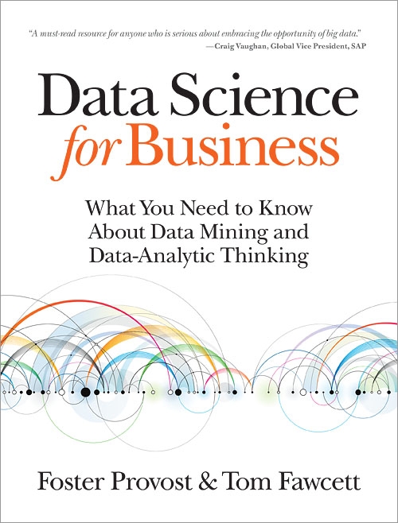

Ao longo dos últimos anos, trabalhando com pesquisa na pós-graduação, como estudante de Estatística e como um analista, eu venho consultando e estudando diversos materiais, de artigos em papers até livros sobre Data Mining, Data Science, Estatística, Big Data e etc. Eu tive oportunidade de consultar muitos bons livros, alguns menos e muitos que eram realmente ruins. ASSIM, nesse post eu gostaria de apresentar a minha seleção de livros e uma breve explicação de porque eu gosto deles e o que você pode encontrar nesses materiais. Estou falando de livros na perspectiva de alguém que trabalha com aplicações, mas não é uma revisão extensiva da literatura da área. Quem visita esse blog já deve ter percebido que eu uso bastante o R e de fato minha lista tem um certo viés indicando livros que usam essa ferramenta. Vamos aos livros!
1. Probabilidade e Estatística
Eu consultava esse livro quando estava estudando Inferência I no bacharelado em Estatística. Não é um livro que geralmente é utilizado em cursos de Estatística (esse não estava na bibliografia) pois apresenta a estatística básica em um nível mais conceitual, praticamente sem demonstrações. JUSTAMENTE POR ISSO eu acho uma excelente indicação para entender estatística básica. TODOS os exemplos e exercícios são com dados reais, de pesquisas reais, nas áreas de engenharia e ciências, o que dá um gostinho a mais já que o leitor consegue ver exatamente como a estatística é aplicada na vida real. O livro cobre probabilidade, testes de hipótese, IC’s, teste de independência, ANOVA e etc. Está tudo aí, apresentado de forma muito intuitiva sempre com vistas nas aplicações. Um livro realmente muito bom, que para mim na época, fazendo um curso teórico de inferência, trouxe bastante da intuição sobre os métodos que eu estava estudando.
{kind=link}

Quando eu comecei a ler este livro eu mal conseguia parar! É um livro que começa nos primórdios da estatística, explorando uma anedota que dá o nome ao livro. O autor caminha por toda a Estatística, sem entrar nos detalhes, mas mostrando o que é, o contexto histórico dos pesquisadores da época, aplicações e etc. É um livro muito completo que fornece ao leitor um panorama do que é a Estatística. É um livro que tem uma leitura leve e agradável e é super indicado para quem nunca ouviu falar de estatística ou acredita que a área de resume a fazer gráficos e calcular médias! Você pode baixar uma amostra com a introdução nesse link da editora Zahar. Esse é o livro de leitura mais agradável nessa lista. Uma pequena amostra: “Tentei aqui algo um pouco menos ambicioso: descrever a revolução estatística na ciência do século XX por intermédio de algumas das pessoas (muitas delas ainda vivas) que nela estiveram envolvidas. Tratei muito superficialmente o trabalho que elas criaram, só para provar como suas descobertas individuais se encaixaram no quadro geral.“
Nesse momento onde se discute bastante a respeito dos problemas com p-valor, p-hacking e afins eu achei esse livro muito interessante pois ele aborda esta e outras questões do ponto de vista das aplicações. O livro é leve, bem escrito e apresenta para o leitor a importância de entender o tamanho de efeito, como fazer uma análise de poder e como fazer meta análise. Não é um livro carregado de fórmulas e também não é um livro que poderia ser usado para um curso de análise de experimentos. Entretanto, para quem gostaria de entender o que é essa discussão toda sobre p-valor acho que esse livro pode ser muito útil.
{kind=link}
2. Data Science básico
 Esse é aquele livro que eu sempre indico para alguém que é leigo, ouviu falar de big data, data mining ou coisa que o valha, e gostaria de saber do que se tratam estas coisas. É um livro pensando para esse público, muito bem escrito por profissionais da área, com ótimos exemplos e praticamente sem matemática. É um livro conceitual e portanto, apesar de apresentar diversos exemplos muito interessantes, o livro não tem códigos ou instruções de como implementar as análises em algum software. O objetivo do livro é responder ao leitor: o que é Data Science? O que eu posso fazer com isso? O que a minha empresa pode ganhar com isso?
{kind=link}
 Esse livro é muito interessante também, indo na mesma linha do Data Science for Business, mas mostrando outros exemplos interessantes e que se aprofunda um pouco mais nas técnicas e nos estudos de caso. Nesse livro o leitor é levado a analisar dados reais, mas utilizando simples planilhas eletrônicas como o Excel/LibreOffice Calc. Para não falar que são só planilhas, bem no final ele apresenta um exemplo com o R. No entanto, a ideia geral do livro é mostrar o que é uma análise de dados, o que você tem a ganhar com isso e como fazer isso no Excel. É bem legal e para um leitor que não é da área, mas quer dar um passo além, pondo data science em prática, esse é um livro muito bom.
Esse livro é muito interessante também, indo na mesma linha do Data Science for Business, mas mostrando outros exemplos interessantes e que se aprofunda um pouco mais nas técnicas e nos estudos de caso. Nesse livro o leitor é levado a analisar dados reais, mas utilizando simples planilhas eletrônicas como o Excel/LibreOffice Calc. Para não falar que são só planilhas, bem no final ele apresenta um exemplo com o R. No entanto, a ideia geral do livro é mostrar o que é uma análise de dados, o que você tem a ganhar com isso e como fazer isso no Excel. É bem legal e para um leitor que não é da área, mas quer dar um passo além, pondo data science em prática, esse é um livro muito bom.
3. Linguagem R
Aqui eu vou mencionar livros fortemente relacionados ao ensino e uso do R. Alguns são introduções conceituais também mas que utilizam muito o R ao longo do livro.
Pensando em um livro de introdução à linguagem R eu fiquei em dúvida entre este e um outro. Mas minha sugestão vai para este, uma vez que ele pode ser usado mais tarde como referência. É um livro muito bom, bem escrito e com bons exemplos. NO ENTANTO, existem diversos cursos online de introdução a programação em R que provavelmente eu indicaria ao invés de começar direto pelo livro. MAS cada pessoa aprende diferente, e alguém já versado em outras plataformas pode tirar vantagem da velocidade de aprender diretamente de um livro. Esse é um que eu gosto muito.
{kind=link}
{kind=link}
Depois que alguém aprende o básico da linguagem R eu acredito que o grande salto de qualidade é entender exatamente como funcionam as principais estruturas de dados da linguagem, como o matrix, data.frame, list e etc. Além disso também acho muito importante entender como trabalhar com datas, como consultar bancos de dados relacionais, como alterar a estrutura de tabelas e etc. Enfim, uma série de conhecimentos com relação à manipulação de dados. Tudo isto está aqui nesse livro, que eu considero um dos melhores da série User R!. Uma vez que se perde tanto tempo na etapa de preparação de dados, eu acredito que o conteúdo deste livro é essencial.
{kind=link}
Além das técnicas que você vai aprender no livro anterior, o segundo próximo salto de qualidade que um usuário da linguagem R pode conseguir é aprender a como programar com eficiência no R. Quem já tem experiência com programação em outras linguagens costuma ter hábitos que no R podem deixar os scripts muito lentos. Esse livro é muito interessante neste aspecto, mostrando para o usuário porque isso é um problema e como você pode programar melhor. O livro também fala do processo de manipulação de strings e diversos outros tópicos super interessantes. Acho que é uma leitura obrigatória.
{kind=link}
Depois de aprender a usar bem a linguagem, o usuário provavelmente já deve estar versado no processo de gerar visualizações básicas com os gráficos do pacote base. ENTRETANTO, a maioria dos gráficos de altíssima qualidade que você vê por aí, gerados com R, são criados com o ggplot2. Eu acho ESSENCIAL aprender a utilizar este sistema gráfico. Assim, minha sugestão é correr os exemplos desse livro pelo menos uma vez, para entender a famosa “gramática dos gráficos” que o ggplot2 implementa. Fiquem atentos que a versão disponível desse livro para compra provavelmente é antiga, e uma nova versão atualizada estará sendo lançada em breve, agora em 2016.
{kind=link}
Se você pretende trabalhar com Data Science e quer realmente entender como funcionam os algoritmos de machine learning minha sugestão é começar com este livro. É um livro de leitura tranquila, feito justamente para profissionais de outras áreas entenderem e aplicarem estes métodos e escrito por dois caras que eu sou fã. Esse livro é ótimo como uma introdução ao machine learning ou statistical learning onde todos os exemplos são implementados na linguagem R. Apesar de não ser um livro sobre a linguagem, é um livro ótimo caso você queira uma introdução ao assunto que utilize o R. Entretanto não é um daqueles livros de aplicações, é um livro teórico sobre o assunto, um livro que poderia ser utilizado em uma disciplina universitária por exemplo. Dois outros pontos fortes do livro são: 1) está disponível de graça aqui. 2) Em janeiro os autores costumam oferecer um MOOC que é praticamente passar por todo este livro.
{kind=link}
Esse é o irmão mais velho do livro anterior. É uma verdadeira obra de referência na área, só que é um livro que apresenta o conteúdo em um nível que pode estar muito acima daquele estudante que está apenas começando na área de análise de dados. Os próprios autores afirmam que escreveram o “introduction” para remediar esse problema. Entretanto é um livro fantástico, super completo, cheio de ótimos exemplos tal que se você quiser um livro para entender todos os detalhes de machine learning (e tiver disposição para isso!) esse é o livro que você deve ter. O livro também é disponibilizado gratuitamente nesse link, mas o livro impresso é de uma qualidade impressionante, vale muito a pena.
{kind=link}
Esse é o livro irmão do “Introduction of Statistical Learning”, como os próprio autores afirmam. O livro apresenta exemplos reais de análises utilizando as técnicas apresentadas no “introduction”. Você vai ver exemplos de classificação, avaliação de modelos, regressão, etc. Os dados são dados reais utilizados em pesquisas dos autores. O livro é muito interessante para ver como se faz data science na realidade. Cheio de exemplos super interessantes em áreas como quimiometria, detecção de fraude, segmentação de clientes e etc. Os autores abordam problemas como: seleção de atributos, problemas com classe desbalanceada, preenchimento de dados faltantes e etc. O livro portanto tem um enfoque nos aspectos práticos da modelagem e deixa a teoria sobre os modelos utilizados para outros livros. Os autores deste livro são os mesmos autores do pacote caret que é tão utilizado pela comunidade R para automatizar tarefas de modelagem. Eles utilizam o pacote extensivamente ao longo do livro.
Por fim, eu gostaria de adicionar esse livro a lista porque é um livro super interessante para discutir em linhas gerais o processo de data mining. Ele é um livro mais na linha do livros clássicos de data mining, mas que conta com muitas aplicações. Neste livro são apresentadas análises práticas de problemas de predição de churn, de fraude, segmentação de clientes, previsão de risco e etc. Só pelos exemplos das aplicações já vale a pena. As aplicações não utilizam o R, mas utilizam SAS, Stata, SPSS dentre outros. É uma boa fonte também para quem quer ver como se faz esse tipo de análise em outros softwares.
{kind=link}
Conclusão
Está longe de ser uma lista exaustiva, muitos bons títulos que eu não conheço devem ter ficado de fora, mas são todos livros que fizeram muito a diferença para mim. Também me restringi aos livros que eu realmente li e usei, e muitos aí eu uso como referência até hoje. Eu teria outras sugestões para livros sobre experimentos, livros sobre análise de survey, séries temporais e etc. Entretanto eu coloquei mais uma bibliografia básica sobre o que costuma ser abordado em currículos de cursos de Data Science que eu vejo por aí.
Excelente post.
Obrigado por compartilhar.
Vlw Eduardo! Obrigado.